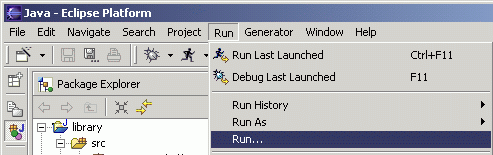

Generating an EMF Model using XML Schema:
Top
Previous: Generating the Editor
Next
Step 4: Running the Generated Editor
In order to run plugins in a runtime workbench, a lunch configuration
must first be set up:
-
Select "Run..." from the "Run" menu.

-
Select "Run-time Workbench" and click the "New" button.

-
You may want to change the configuration's name to something more
recognizable. Then, switch to the "Plug-ins and Fragments" tab.

-
Select "Choose plugin-ins and fragments to launch from the list", and
then select the top-level "External Plug-ins".

-
Switch to the "Common" tab, select "Run" from the "Display in favorites menu" section
of the dialog, and the click the "Apply" button.

A runtime workbench can be launched from the "Launch Configurations"
dialog by clicking on the "Run" button. Once the launch configuration
has been set up, it can also be launched from the "Run" button on the
toolbar.
-
Select the new launch configuration from the "Run" button drop-down.

-
Wait for a second instance of the Eclipse platform to come up. Bring
up the "Help/About Eclipse Platform" dialog, click on the "Plug-in
Details" button, and verify that the generated plugins are there.

The library model wizard can now be used to create a new instance of
the model.
-
Working in the Resource perspective, Bring up the "File/New/Project..." dialog.

-
Select "Simple" and "Project". Click the "Next" button.

-
Give the project a name and click the "Finish" button.

-
Right-click the project and select "New/Other..." from the pop-up menu.

-
Select "Example EMF Model Creation Wizards" and "Library Model". Click
the "Next" button.

-
Enter a file name for the library model. Make sure it ends with a
".library" extension. Then click the "Next" button.

-
Select "Library" as the model object, and click the "Finish" button.

-
The newly created library model is opened in the main view.

The root object in this editor corresponds to the "My.library" resource.
Under it lies a single library, the object that was selected as the model
object in the wizard.
-
Expand the "platform:/resource/librarytest/My.library" resource to see
the library object. Select it.

-
In the Properties view, click on the "Value" column of the "Name"
property, and give a name to the library. The label in the main
view will be updated when you hit Enter.

-
Right-click on the library and select "New Child/Writer" from the
pop-up menu to add a new writer to the library.

-
Enter the name of the writer in the Properties view.

-
Similarly, a book can be added to the library.

-
All the book's attributes and references can be edited in the Properties
view.

-
You can save, close, and then re-open the model using the text editor
if you wish to see the saved model in XMI format.

-
The XMI format file of "My.library" contains a Library object called "Skills Center",
a Book object with the value of title as "Fellowinship of the Ring", and a Writer object
that "JRR Tolkien" is the writer's name.

Top
Previous: Generating the Editor
Next